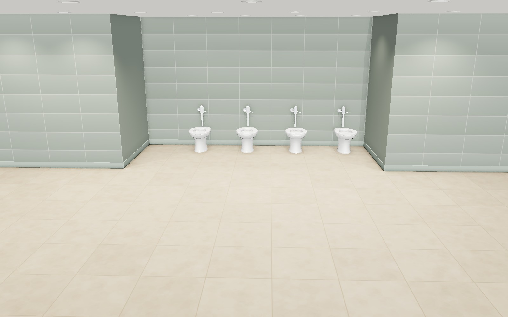
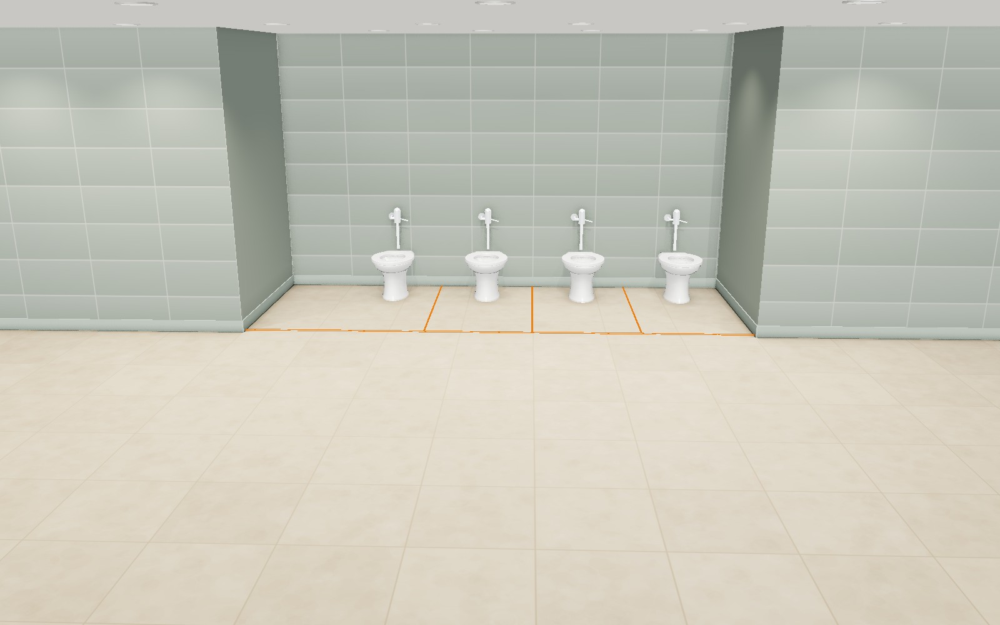
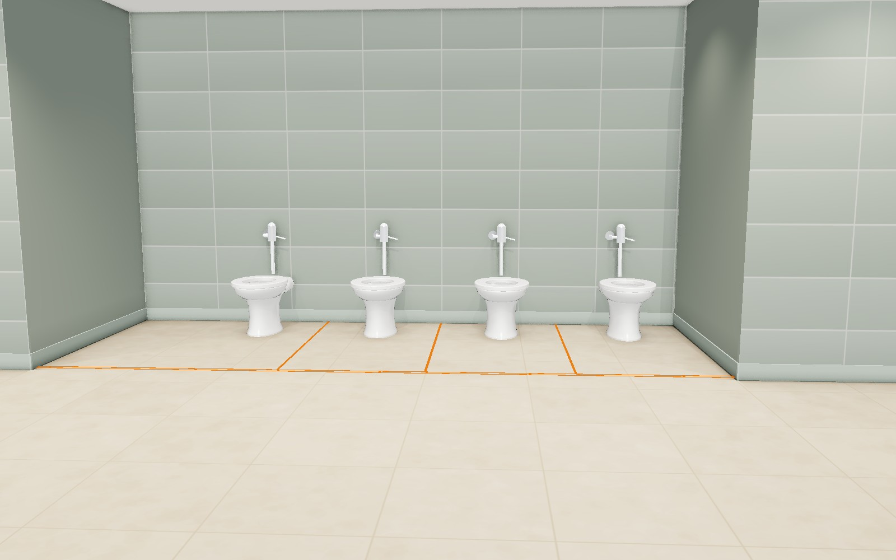
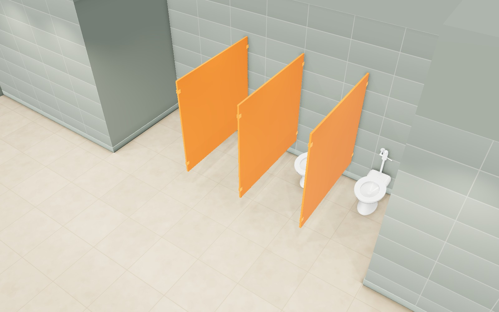
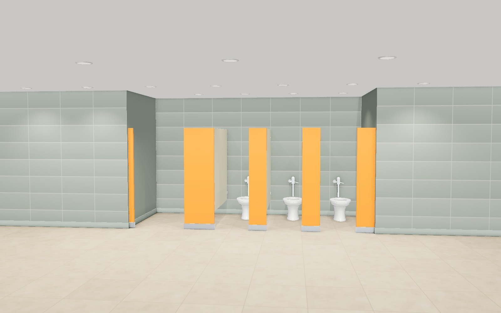
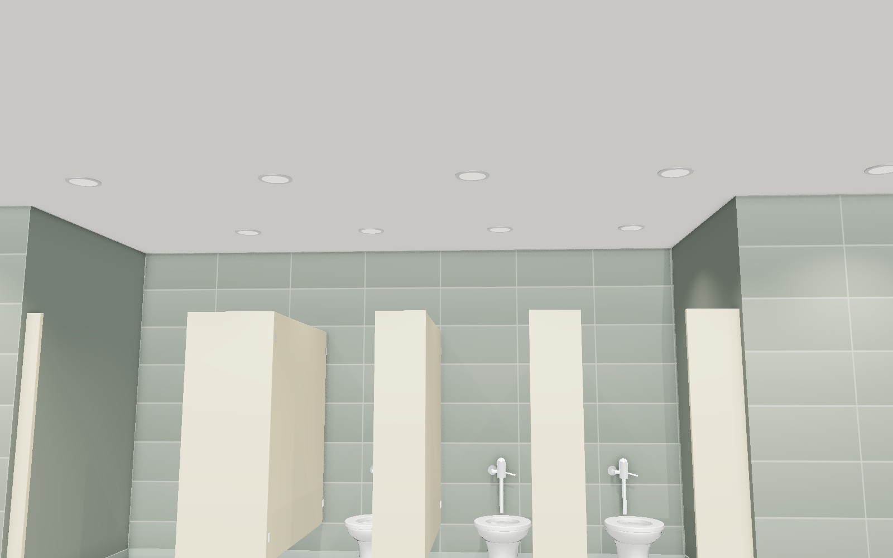
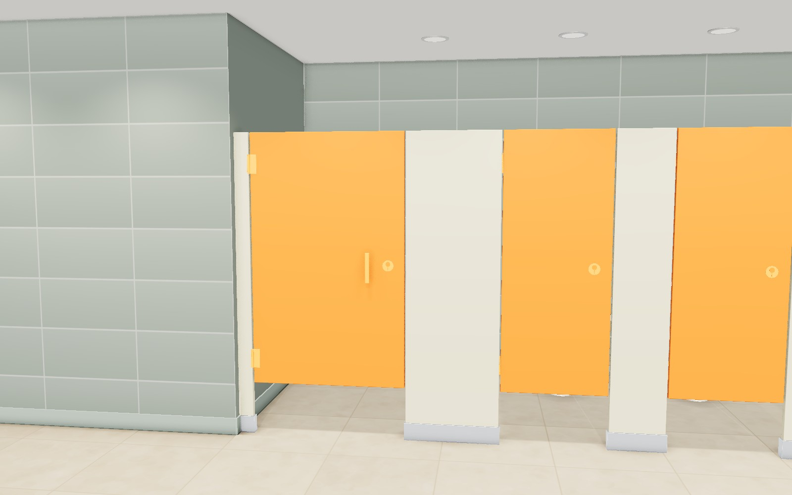
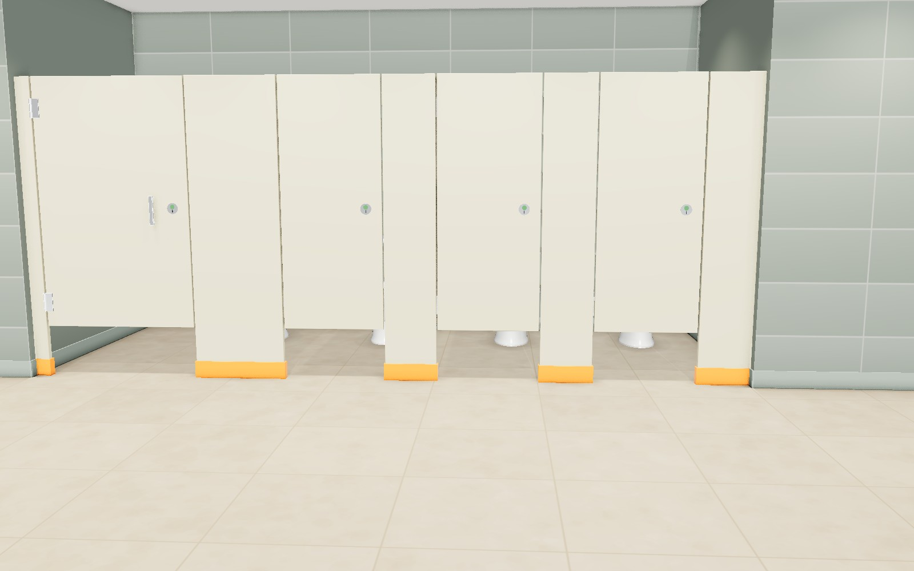
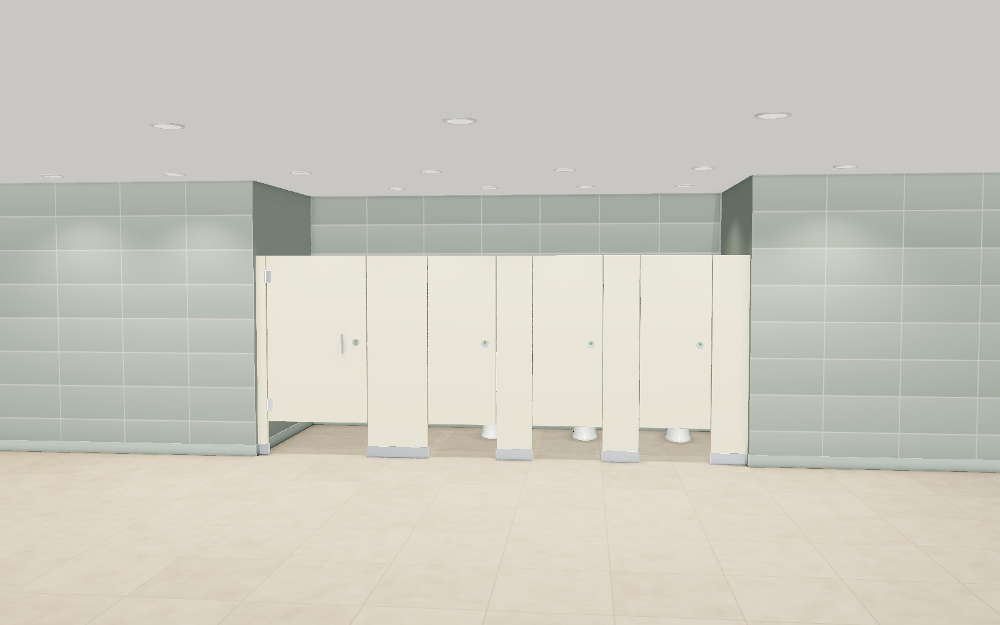

Next Partitions
Installation overview
Floor mounted partitions: how they go together
Each pilaster is anchored into the floor and nothing ties the tops together, so the space above the stalls stays open. The floor anchoring carries the whole load.
Next PartitionsFloor mounted partitions: how they go together
Before installation starts
This overview shows the general order in which these partitions go together. It is not installation instructions. Install to the manufacturer's instructions supplied with the order and to the approved shop drawings; where they differ from this overview, they win.
The order, at a glance
1Check the room and the floor
2Lay out the stalls
3Set the floor anchors
4Put up the wall brackets and panels
5Lower the pilasters onto the anchors
6Plumb, level, then tighten
7Hang the doors
8Seat the shoes
9Check the finished run
Check the site first
- Read the manufacturer's instructions and the approved shop drawings from start to finish before drilling anything.
- Measure the room, wall to wall and floor to ceiling, and compare it with the drawings.
- Unpack and count every part. Report freight damage straight away, and don't start with parts missing.
- Floor, walls and ceiling should be finished, clean and free of debris and sticking-out fasteners.
- Store panels and doors flat, not leaning, and leave the protective film on until the end.
- Solid plastic (HDPE) needs time to adjust to the room's temperature. Install it in a climate-controlled space, out of direct sun.
- The floor has to be sound structural concrete. Confirm what is in the slab before drilling: heating pipes, conduit or post-tension cables change where anchors can go.
- Solid backing has to be in the walls wherever a bracket is fastened. It goes in before the walls are finished, by others.
- Floors usually slope to a drain. Take heights from the highest point of the floor so every pilaster can be set to the same level.
Safety
- Wear proper protective equipment, and check the site for hazards before starting.
- Panels, doors and pilasters are heavy. Handle them with two people and hold them on solid temporary supports until they are fastened.
- Don't fasten into a wall or ceiling until the backing or structure behind it is confirmed. If it isn't there, stop and tell the general contractor.
- Before handover, check that every latch can be opened from outside in an emergency.
- Without a headrail, a pilaster is only as steady as its floor anchors. Use the anchors the manufacturer specifies for the floor you have.
Next PartitionsFloor mounted partitions: how they go together

1
Check the room and the floor
Confirm the room size, the toilet positions and the wall backing match the shop drawings, and that the concrete floor is sound, finished and clean.

2
Lay out the stalls
Mark the pilaster line across the front, each pilaster's anchor positions and each dividing panel line back to the wall, from the drawings.
Next PartitionsFloor mounted partitions: how they go together

3
Set the floor anchors
Drill and set the anchors at each pilaster position, with the leveling hardware on them. Set the leveling hardware so all the pilaster tops will end up level with one another.

4
Put up the wall brackets and panels
Fasten the wall brackets into the backing and set the dividing panels into them on temporary supports at the right height, without tightening.
This step
Next PartitionsFloor mounted partitions: how they go together

5
Lower the pilasters onto the anchors
Slide the shoe onto each pilaster and hold it up, then lower the pilaster onto its anchors and connect it to the panel.
This step

6
Plumb, level, then tighten
Bring each pilaster plumb both ways and level with the others, set every door opening to the drawings, then tighten the anchors and brackets fully. Each pilaster has to stand rigid on its own.
Next PartitionsFloor mounted partitions: how they go together

7
Hang the doors
Hang each door on its hinges and adjust it until the gaps are even, it swings freely and the latch meets its keeper. Set each door's resting position; the accessible stall's door closes on its own.
This step

8
Seat the shoes
Lower each shoe over the pilaster base so it covers the anchors, and secure it.
This step
Next PartitionsFloor mounted partitions: how they go together

9
Check the finished run
Push on each pilaster top: none should move. Check every fastening is tight, then test each door and latch, including opening it from outside. Fit any accessories the drawings show.
Next PartitionsFloor mounted partitions: how they go together
After installation
- Peel off the protective film and clean with mild soap and water only. Acid, tile cleaners and abrasives damage the finish; let the other trades on site know.
- Leave the manufacturer's care and warranty information with the building owner.
- Keep the spare hardware and the keys or tools for the latches with the owner.
This overview shows the general order in which these partitions go together. It is not installation instructions. Install to the manufacturer's instructions supplied with the order and to the approved shop drawings; where they differ from this overview, they win.
Installers are independent businesses. You hire, schedule and pay them directly. Next Partitions isn't a party to installation agreements and doesn't perform, supervise or guarantee installation work. Local code compliance rests with the installer and the building owner.
Images are simplified 3D illustrations of a sample four-stall layout, not of any one manufacturer's product. Parts and hardware vary by manufacturer and material.